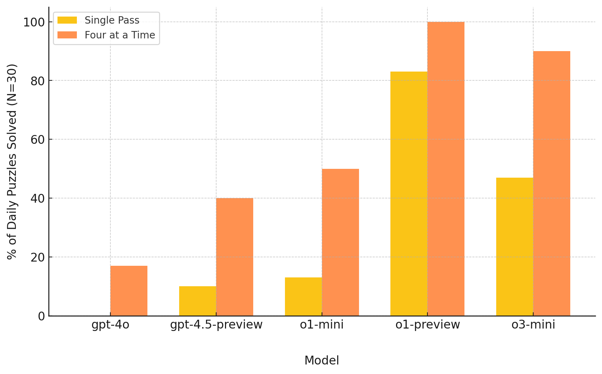
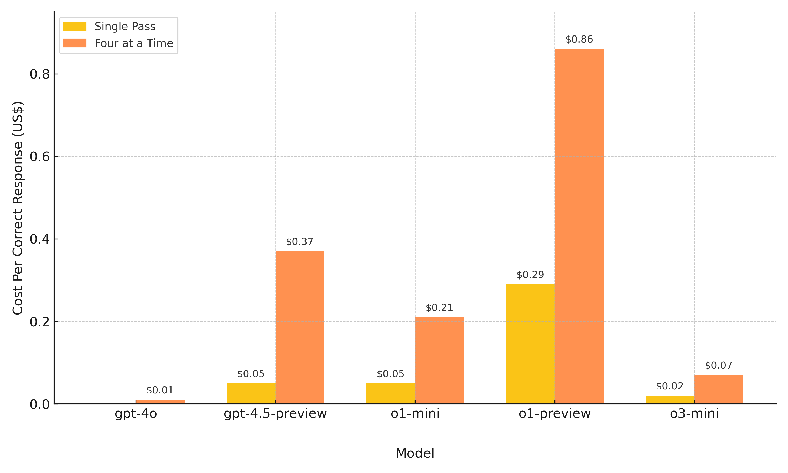

Running a Custom Benchmark: AI vs. The New York Times' Connections
View ResultsIntroduction
After the release of OpenAI's o1 model in December 2024, I became curious how the model would perform on The New York Times Connections puzzle. My initial experiments through the chat interface were mostly successful, although the model did make mistakes occasionally. Among many examples it was impressive to see it correctly work out that 'Lincoln', 'Biscuit', 'Corn', and 'Stained' are Misspelled Words in Famous Rock Bands.
Some quick Googling led me to several articles documenting failed experiments with o1 and Connections, which got me thinking about undertaking a more structured attempt to evaluate the performance of various OpenAI models on the puzzle.
I built a web application that allowed me to input the 16 daily Connections words and send them, along with the puzzle's rules, to different OpenAI models for solving. Initially, I tested three models: GPT-4o, o1-mini, and o1 (o1-preview). Just as I was finalizing the experiment in February 2025, OpenAI released GPT-4.5 and gave me API access to o3-mini. Curious to see how these models would perform on the puzzle, I added them to the experiment.
For each puzzle, I evaluated each of these models in two 'modes': (1) Single Pass, where the model attempted to group all 16 words into 4 sets at once, and (2) Four at a Time, where the model followed standard Connections rules, guessing 4 words per round and receiving feedback ("correct," "incorrect," "one away", or "already guessed"), with up to 4 mistakes allowed.
Results
I ran the experiment on 30 daily Connections puzzles between January and February 2025. The chart below shows a summary of the results. The full results are available here.
In short, o1 is almost always able to solve the puzzle. In the harder Single Pass mode, it identified all four groupings correctly 83% of the time. Under standard Connections rules, it succeeded 100% of the time, more than half of the time (57%) without a single mistake.
The second-best performer was o3-mini, which solved the puzzle 47% of the time in Single Pass mode and 90% of the time in Four at a Time mode.
The other models struggled with the puzzle to varying degrees. o1-mini performed decently in Four at a Time, solving the puzzle 50% of the time in that mode. Despite not being a reasoning model, GPT-4.5 had comparable performance to o1-mini, and was clearly superior to GPT-4o. This aligns with OpenAI findings:
…we provide GPT‑4.5's results on standard academic benchmarks to illustrate its current performance on tasks traditionally associated with reasoning. Even by purely scaling up unsupervised learning, GPT‑4.5 shows meaningful improvements over previous models like GPT‑4o.
Performance vs. Cost
Despite its effectiveness, o1 has two notable drawbacks, the first being cost. The model is expensive to use, with high token costs and heavy token consumption. The average cost per correct response from o1 was $0.29 (Single Pass) and $0.86 (Four at a Time). For comparison, a correct response from the next best overall performer, o3-mini, was just $0.02 (Single Pass) and $0.07 (Four at a Time).
The second drawback is latency. Although I didn't record how long each puzzle took to solve—in hindsight, this would have been useful—o1 was generally very slow, sometimes taking several minutes to work through a puzzle. This was especially noticeable in Four at a Time mode, where there were multiple exchanges between the interface and the API. o1-mini was also noticeably slow, while o3-mini was consistently faster.
Overall, o3-mini is a compelling alternative to o1, balancing strong performance with affordability and speed.
Consistency
Since each model was tested on a puzzle only once, one concern I had was the possibility that the observed results were one-offs. I became curious: How consistent is model performance on a given puzzle? To explore this, I conducted a consistency evaluation, running each of the 5 models on a subset of 10 puzzles 10 times (in each mode). The results can be viewed by toggling to Consistency Test on the results page.
Overall, o1 is a highly consistent model. Across 100 runs (10 runs per puzzle on 10 puzzles) in Four at a Time mode, the model failed to solve a puzzle just once. It also showed high consistency in Single Pass mode: It solved a puzzle 80% of the time or more in 60% of the sample, and struggled to solve the two puzzles in the sample it failed to solve on its initial run, solving them just 20% and 30% of the time. That said, while o1 is highly consistent in Single Pass mode, it is not perfectly consistent—meaning it can occasionally fail to solve a puzzle it is generally able to solve, and vice versa.
The same applies to the other models: While they are broadly consistent—most of the time, they can either solve a puzzle or not—they are not perfectly consistent. A model can occasionally surprise us by solving a puzzle it usually fails at, or by failing a puzzle it otherwise reliably solves.
API
OpenAI's API implementation differs depending on the model being used. The most significant difference in this experiment was that o1-mini and o1 do not support structured outputs—meaning they cannot generate JSON responses that strictly follow a predefined schema. This was essential for the solver interface, particularly in Four at a Time mode, where the model's guess needed to be validated and evaluated for the solving sequence to continue. A simple workaround was to ask the o1 models to format their responses in a JSON-like structure, which was then passed to GPT-4o for conversion into schema-compliant output.
Another small difference is that, unlike the other models, the o1-series models do not accept a 'system' message. This message provides broad instructions to guide model behavior in an API interaction; in the application, it's where I provided the models with the game's rules. It's unclear why the o1-series models lack this feature. When interacting with them in the application, I ended up including the game instructions in the initial 'user' message instead.
Other thoughts
Although it feels like AI model improvements are quickly becoming routine, I still find it impressive and fun to watch strong models like o1 work through and solve a Connections puzzle. I still get tempted to run the daily puzzle through the solver to see o1 solve it—or maybe finally fail.
I think the experiment clearly shows that OpenAI's advanced reasoning models can solve Connections. Moreover, the failure of non-reasoning models (like GPT-4o) to solve the puzzle underscores that reasoning/chain-of-thought models are fundamentally better at solving logic problems.
Although we shouldn't assume that these findings generalize to other contexts, the superior performance of all models in Four at a Time mode suggests that decomposing problems into smaller steps and providing AI models with feedback can improve their performance.
With the exception of o1 in Four at a Time mode, inconsistent model performance is a nagging issue. For example, out of 10 puzzles tested for consistency with o1 in Single Pass mode, 4 puzzles were solved only 70-80% of the time—that is, the model solved them most of the time but not always. This presents a problem: a model that usually produces the correct result, but occasionally stumbles. Once again, while we can't necessarily generalize from this experiment to other contexts, this suggests that even tried-and-tested AI models should not be relied on uncritically.
In terms of next steps, I'm curious how models from other companies/providers would perform on the puzzle compared to OpenAI. This might be coming up.